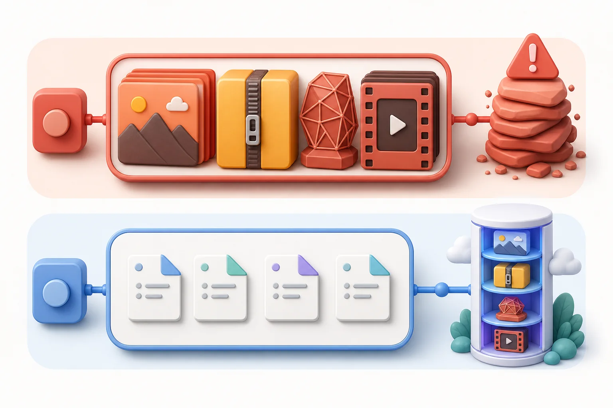

Track 追蹤
Choose a large working-tree file and review exactly what will move. 揀一個工作目錄大檔，先睇清楚邊份會搬屋。
Keep a tiny readable pointer in Git. Store the heavy bytes in a GitHub Release or container registry. Desktop Material handles the upload, checks every byte, and restores the real file when you need it. Git 入面只留一張細細張、睇得明嘅指標；真正大舊嗰份就放去 GitHub Release 或容器倉庫。Desktop Material 幫你上傳、逐 byte 驗證，需要時先穩陣還原。

Cheap LFS is intentionally not Git LFS. A plain Git client sees the pointer text. Desktop Material reads that pointer, finds the provider object, verifies its size and SHA-256 digest, and materializes the file. Cheap LFS 刻意唔係 Git LFS。普通 Git 用戶會見到指標文字；Desktop Material 就會讀個指標、搵返儲存物件、核對大小同 SHA-256，先至還原成真檔。

Choose a large working-tree file and review exactly what will move. 揀一個工作目錄大檔，先睇清楚邊份會搬屋。
Upload verified raw parts to Releases or publish an immutable registry object set. 驗證後上傳去 Release，或者發佈一套不可變嘅 registry 物件。
The tracked path becomes a compact pointer; the original bytes stay outside Git. 原路徑變成精簡指標，真 bytes 就留喺 Git 外面。
Download, verify, and atomically replace the working copy—never trust partial bytes. 下載、驗證、一次過換入工作檔；半桶水 bytes 一律唔收貨。
Both keep heavy bytes out of ordinary Git objects. The split is everything around that pointer: client, provider, push timing, restore path, portability, billing, and operations. This is a fit guide, not a rigged victory lap. 兩邊都會將大舊 bytes 搬出普通 Git object。真正分野係指標周邊成套 做法：client、provider、push 時機、還原、跨平台、計費同營運。 呢度係揀工具指南，唔係預先寫好賽果嘅巡遊。
Best for Windows teams that want a visual, guarded path from a working file strictly over 100 MiB to a verified pointer backed by GitHub Releases or OCI storage. 最啱想用 Windows 圖像介面、由嚴格超過 100 MiB 工作檔一路有護欄搬到 GitHub Releases／OCI，再落實驗證指標嘅 team。
Best for teams that need an established pointer spec, cross-platform clients, hosting-provider integration, file locking, and familiar command-line automation. 最啱需要成熟指標規格、跨平台 client、hosting provider 整合、file locking 同熟悉 CLI 自動化嘅 team。
Filter comparison categories 篩選比較分類
30 decision checks shown 項比較顯示緊
On a narrow screen, scroll the comparison sideways. 窄畫面可以左右捲動比較表。
| Decision 考慮項目 | Cheap LFS | Git LFS | Fit signal 邊種需要較啱 |
|---|---|---|---|
| Workflow and setup 流程同設定 | |||
| Primary client 主要 client | Built into the Windows-only Desktop Material app. 內置喺 Windows 專用 Desktop Material。 | A separate open-source Git extension with cross-platform clients. 獨立開源 Git extension，有跨平台 client。 | Different strengths 各有所長 |
| First-time setup 首次設定 | Choose a provider in Repository settings; the app owns the guided setup. 喺 Repository settings 揀 provider，由 app 帶住設定。 |
Install Git LFS, run git lfs install, then
commit tracking rules.
安裝 Git LFS、行 git lfs install，再 commit
tracking rules。
|
Guided UI 介面帶路 |
| How files are selected 點揀檔案 | Review individual large files from Changes or the Large files manager; the default threshold is over 100 MiB. 喺 Changes 或 Large files manager 逐份審閱；預設係超過 100 MiB。 |
Track path patterns in .gitattributes; size
alone is not a persistent tracking rule.
用 .gitattributes 路徑
pattern；單靠檔案大小唔係 持久 tracking rule。
|
Intent model 揀法唔同 |
What git push sends
git push 傳啲乜
|
The verified provider upload happens first; the later Git push sends the compact pointer commit. provider 上傳同驗證先完成；之後 Git push 送精簡指標 commit。 | The pre-push hook uploads missing LFS objects as part of the normal push path. pre-push hook 會喺普通 push 流程上傳欠缺嘅 LFS objects。 | Timing choice 時機選擇 |
| Unpublished first branch 首次未發佈 branch | Publishes and proves an exact branch-tip anchor before a Release upload; an empty repository gets one empty bootstrap commit. Release 上傳前先發佈兼證明精確 branch tip；全空 repo 只建一個空白 bootstrap commit。 | Does not need a Release anchor; the LFS transfer follows the host’s normal push negotiation. 唔需要 Release anchor；LFS transfer 跟 host 嘅普通 push negotiation。 | Backend-driven backend 決定 |
| Missing-object safety 欠 object 保護 | A failed upload keeps the raw file selected and refuses to write a dangling pointer. 上傳失敗會保留原檔選取，拒絕寫低斷線指標。 | Incomplete pushes are blocked by default when required LFS objects are absent from the local cache. 本機 cache 欠必要 LFS object 時，預設會擋住 incomplete push。 | Strong on both 兩邊都穩 |
| Storage, limits, and cost model 儲存、限制同成本模式 | |||
| Storage backends 儲存 backend | GitHub Release assets, GHCR/Docker Hub OCI objects, or a reviewed manual Release handoff. GitHub Release assets、GHCR／Docker Hub OCI objects，或者 審閱後手動 Release 交接。 |
A Git LFS server selected by the Git host or
.lfsconfig.
由 Git host 或 .lfsconfig 指定嘅 Git LFS
server。
|
Provider choice provider 選擇 |
| GitHub billing shape GitHub 計費方式 | No Git LFS meter is used; Release or registry quotas, policies, retention, and terms still apply. 唔會用 Git LFS meter；Release／registry 自己嘅 quota、政策、 保留同條款照樣適用。 | GitHub counts LFS storage and download bandwidth against the plan quota; overages are billed or blocked according to payment and budget settings. GitHub 由一開始就將 LFS 儲存同下載 bandwidth 計入 plan quota；超額後按付款同 budget 設定收費或暫停。 | Check current usage 睇實現時用量 |
| Very large logical files 超大邏輯檔案 | After bounded inventory and preflight succeed, new Release writes use 500 MiB parts. Provider limits still apply; 50+ GiB inventory hardening remains open in #96. 有界 inventory 同 preflight 成功後，新 Release 寫入用 500 MiB 分件。provider 限制照計；50+ GiB inventory hardening 仲喺 #96 等最後驗證。 | Uses one logical LFS object; GitHub’s current per-file maximum varies by plan from 2–5 GB. 用一個邏輯 LFS object；GitHub 現時每檔上限按 plan 由 2–5 GB。 | Multipart option 可以分件 |
| Cloud compression 雲端壓縮 | Can install a reviewed GitHub workflow that adopts verified raw-DEFLATE parts while retaining raw fallback. 可安裝經審閱 GitHub workflow，用驗證過嘅 raw-DEFLATE parts，並保留 raw fallback。 | Core Git LFS keeps the logical object model unchanged. Clients can request gzip/zstd HTTP download encoding and configure clean/smudge extensions; neither rewrites provider assets into Cheap LFS raw-DEFLATE parts. 核心 Git LFS 保持邏輯 object model；client 可要求 gzip／zstd HTTP download encoding，亦可設定 clean／smudge extensions，但兩樣都唔等於將 provider asset 改寫成 Cheap LFS raw-DEFLATE parts。 | Built-in option 內置選項 |
| Client-side payload encryption client-side payload 加密 | Interactive Release pins can use AES-256-GCM with the password outside Git. An unattended pin without a usable saved password skips the large file, never uploads plaintext, and excludes it from that commit. 互動 Release pin 可用 AES-256-GCM，密碼留喺 Git 外面。無人值守 pin 冇可用已儲存密碼，就會跳過大檔、絕不明文 upload，亦唔會放入嗰次 commit。 | Core Git LFS defines no payload-encryption layer. Host access control is not client-side encryption; a separately operated extension can transform content. 核心 Git LFS 冇定義 payload encryption layer。host access control 唔係 client-side 加密；另行營運嘅 extension 可以轉換內容。 | Native option 原生選項 |
| Where objects appear objects 喺邊度見到 | Release buckets or registry packages are provider resources; Desktop Material hides owned storage Releases from its ordinary release list by default. Release bucket 或 registry package 都係 provider resource；Desktop Material 預設會喺普通 release list 收起自己擁有嘅儲存 Releases。 | LFS objects live behind the host’s LFS service rather than as ordinary release assets. LFS objects 放喺 host 嘅 LFS service 後面，唔係普通 release assets。 | Visibility choice 可見度取向 |
| Restore, integrity, and delivery 還原、完整性同交付 | |||
| Pointer integrity 指標完整性 | Records whole-file size/SHA-256 plus provider and part metadata; restore verifies before atomic replacement. 記錄全檔 size／SHA-256、provider 同分件 metadata；驗證後先 atomic replace。 | The standard pointer records a SHA-256 object ID and size; the client verifies the downloaded object. 標準 pointer 記錄 SHA-256 object ID 同 size；client 驗證下載 object。 | Strong on both 兩邊都穩 |
| Normal clone/checkout 普通 clone／checkout | Git receives pointers first; Desktop Material can materialize eligible files on open/clone or on demand. Git 先收 pointers；Desktop Material 可喺開啟／clone 時或按需要還原合資格檔案。 | Clean/smudge or filter-process integration normally materializes tracked files during checkout. clean／smudge 或 filter-process 整合通常會喺 checkout 還原追蹤檔案。 | Transparent checkout 透明 checkout |
| Selective restore/fetch 選擇性還原／fetch | Materialize one pointer or all known pointers from the Large files inventory. 喺 Large files inventory 還原一張或全部已知 pointers。 | Supports fetch include/exclude rules, recent windows, and skip-smudge workflows. 支援 fetch include／exclude、recent window 同 skip-smudge 流程。 | Automation depth 自動化更深 |
| Local object cache 本機 object cache | Uses bounded app scratch space and the materialized working file; there is no user-facing LFS cache-prune command. 用有界 app scratch space 同已還原工作檔；冇對等嘅 user-facing LFS cache-prune command。 | Maintains a local LFS object cache with fetch and configurable prune commands. 有本機 LFS object cache、fetch 同可設定 prune commands。 | Cache tooling cache 工具 |
| Offline behavior 離線表現 | Already materialized files keep working; a pointer that still needs provider bytes cannot restore offline. 已還原檔案照用；仲要向 provider 攞 bytes 嘅 pointer 離線還原唔到。 | Cached/materialized objects keep working; uncached objects need the LFS remote. cache／已還原 objects 照用；未 cache 嘅要連 LFS remote。 | Plan ahead 預先準備 |
| Archives and GitHub Pages archives 同 GitHub Pages | GitHub-generated source archives contain Cheap LFS pointers. A separate build may materialize bytes into its own artifact or Pages output; Pages itself does not dereference the pointer. GitHub 生成嘅 source archive 會有 Cheap LFS pointers。另一個 build 可先還原 bytes 落自己 artifact 或 Pages output；Pages 本身唔會解 pointer。 | GitHub can optionally include LFS objects in archives, but explicitly does not support Git LFS for Pages sites. GitHub 可選擇將 LFS objects 放入 archive，但明確唔支援 Git LFS 用於 Pages site。 | Materialize first 先還原 |
| Collaboration and portability 協作同可攜性 | |||
| Operating systems 作業系統 | Desktop Material’s supported product path is Windows. Desktop Material 正式支援路線係 Windows。 | Available across Windows, macOS, and Linux environments. 可用於 Windows、macOS 同 Linux 環境。 | Cross-platform 跨平台 |
| Host ecosystem host 生態 | Purpose-built around GitHub Releases and selected OCI registries. 專為 GitHub Releases 同指定 OCI registries 而設。 | A documented protocol implemented by many Git hosting products and standalone servers. 有公開協議，唔少 Git hosting 產品同獨立 server 都有 implementation。 | Ecosystem breadth 生態更闊 |
| Collaborator without the client 協作者冇 client | Sees readable Desktop Material pointer text, not original bytes. 見到可讀 Desktop Material pointer text，唔係原本 bytes。 | Sees the Git LFS pointer and cannot access original bytes through checkout. 見到 Git LFS pointer，checkout 攞唔到原本 bytes。 | Client required 要有 client |
| Fork behavior on GitHub GitHub fork 表現 | Pointers keep their original provider coordinates; a fork does not receive an independent object copy automatically. pointer 保留原 provider coordinates；fork 唔會自動有獨立 object copy。 | GitHub attributes fork LFS storage and bandwidth to the parent owner. Public-fork pushes work only when the network already has the object or the pusher can write to the root network. GitHub 將 fork LFS 儲存同 bandwidth 計落 parent owner。public fork push 要 network 已有個 object，或者 pusher 有 root network write 權限先得。 | Read the boundary 睇清界線 |
| Binary file locking binary file locking | No Cheap LFS lock protocol; coordinate exclusive binary edits another way. 冇 Cheap LFS lock protocol；獨佔 binary edit 要用其他方法協調。 | Defines lock/list/unlock APIs and pre-push lock verification when the server supports them. 有 lock／list／unlock API；server 支援時可喺 pre-push 驗證 lock。 | Git LFS edge Git LFS 佔優 |
| Pull request review Pull request 審閱 | The committed Git blob is the Cheap LFS pointer; GitHub rendering varies by file type. Review the pointer with Git and materialize locally to inspect the binary. commit 入 Git 嘅 blob 係 Cheap LFS pointer；GitHub render 會按 file type 有分別。用 Git 審 pointer，再本機還原 binary。 | GitHub may show only pointer text for LFS content; inspect non-rendered binary changes locally. GitHub 對 LFS content 可能只顯示 pointer text；未 render binary change 要本機審閱。 | Pointer review 審 pointer |
| Operations and governance 營運同治理 | |||
| Existing-history migration 現有歷史搬遷 | Tracks reviewed working-tree files going forward; it does not automatically rewrite old Git history. 由已審閱 working-tree 檔案開始向前追蹤；唔會自動重寫舊 Git 歷史。 |
git lfs migrate supports scoped
import/export. Most modes rewrite history;
import --no-rewrite instead creates a new
commit.
git lfs migrate 支援有範圍
import／export。多數模式重寫歷史；
import --no-rewrite 就另建新 commit。
|
Migration tooling 搬遷工具 |
| Retention responsibility 保留責任 | Keep every provider object needed by any commit you promise to restore; pointer reachability is not provider retention. 承諾仲原到嘅 commit 所需 provider object 全部要留；pointer reachable 唔等於 provider 會幫你保留。 |
Retention and deletion are host policy; local
prune removes only eligible cached
objects.
保留同刪除由 host policy 決定；本機
prune 只清合資格 cached objects。
|
Govern explicitly 要明確治理 |
| Remote deletion guardrails remote 刪除護欄 | Recognizes app-owned Release buckets by sentinel and provenance, reviews identity, and refuses unrelated releases. 用 sentinel 同 provenance 認出 app-owned Release bucket、審閱身份，無關 release 一律拒絕掂。 | Server-side object lifecycle is host-managed; deleting a Git reference is not the same as deleting billed LFS storage. server object lifecycle 由 host 管；刪 Git reference 唔等於即時刪除計費 LFS storage。 | Visible review 睇住先刪 |
| Transfer observability transfer 可觀察性 | The progress model reports queue, provider, reason, bytes, timing, ETA, retry, decrypting, and manual phases per file; final built capture of the distinct decrypting label remains open in #85. progress model 逐檔報 queue、provider、原因、bytes、時間、ETA、 retry、decrypting 同手動階段；獨立 decrypting label 嘅最後 built capture 仲喺 #85。 | CLI transfer progress and trace/config controls integrate naturally with scripts and terminal logs. CLI transfer progress、trace／config 控制自然融入 script 同 terminal log。 | UI vs CLI UI 對 CLI |
| Manual recovery path 手動救援路線 | Can prepare deterministic parts for browser upload, then verifies exact names, sizes, digests, and downloads before adopting them. 可準備固定分件俾 browser 上傳，之後核對精確名稱、大小、digest 同下載先收貨。 | Uses the LFS batch/transfer protocol and CLI retry tools; there is no equivalent GitHub Release handoff. 用 LFS batch／transfer protocol 同 CLI retry；冇對等 GitHub Release 手動交接。 | Browser fallback browser 後備 |
| CI and automation CI 同自動化 | Desktop Material owns pointer creation; optional cloud compression uses a reviewed repository workflow. CI that needs bytes must materialize them deliberately. Desktop Material 負責 pointer；可選雲端壓縮用經審閱 repo workflow。CI 要真 bytes 就要刻意還原。 | Git LFS exposes scriptable fetch and checkout commands; each CI environment must install or enable the client and configure checkout behavior. Git LFS 有可 script 嘅 fetch 同 checkout command；每個 CI 環境都要安裝／啟用 client，再設定 checkout 行為。 | Automation breadth 自動化更闊 |
Cheap LFS behavior is documented in the technical reference. Git LFS behavior is cross-checked against the official Git LFS guide, GitHub’s LFS overview and limits, current billing model, and collaboration guidance. GitHub.com limits and billing were checked on July 28, 2026; provider plans and policies can change. Cheap LFS 行為見 技術文件；Git LFS 行為就對照 官方 Git LFS 指南、 GitHub LFS 總覽同限制、 現行計費模式同 協作指引。GitHub.com 限制同計費資料查核日期係 2026 年 7 月 28 日；provider plan 同政策可以改。

Use the repository rail and open Large files, or go to Repository settings → Cheap LFS.喺 repository rail 開 Large files，或者去 Repository settings → Cheap LFS。
Start with GitHub Releases for the simplest project-bound setup. Use a registry when you need an immutable current object set.最簡單就用 GitHub Releases；想要一套不可變嘅目前物件集合，就揀 registry。
Public Release pointers may restore signed out when explicitly public. Private storage needs the right account.明確公開嘅 Release 指標可以登出照還原；私人倉庫就一定要有啱嘅帳戶權限。
Use the large-file filter in Changes or the Large files manager. Keep source code and ordinary small assets in normal Git.用 Changes 嘅大檔篩選器或者 Large files manager。Source code 同普通細檔繼續留喺正常 Git。
Do not edit the source mid-transfer. Desktop Material rejects changed-in-flight files and reports each worker honestly.傳緊嗰陣唔好改原檔。Desktop Material 發現飛行中變咗樣會拒收，worker 狀態亦會老實報數。
Review the pointer diff, then commit and push it. Keep the backing Release or registry object for as long as that commit must remain restorable.睇過指標 diff 先 commit 同 push。只要嗰個 commit 仲要還原，就唔好刪背後嘅 Release 或 registry 物件。
Use Materialize or Materialize all. A fresh clone should receive the pointer first and then recover verified original bytes.用 Materialize 或 Materialize all。新 clone 會先收到指標，再攞返驗證過嘅原裝 bytes。
git push carries the pointer. A first
Release publication may create and prove an anchor
first.
喺已有 branch，大舊 bytes 先行；之後普通
git push 送指標。首次 Release
發佈可能要先建立兼證明 anchor。
Desktop Material consumes the exact reviewed upload stream,
validates the returned provider state, and revalidates the
source before it writes the pointer you commit. The later push
does not need
git lfs push, and a failed provider upload does
not leave a newly committed pointer whose bytes exist nowhere.
Desktop Material 會食晒精確審閱 upload stream、核對 provider
回傳狀態，再驗多次 source，先寫低俾你 commit 嘅 pointer。之後
push 唔需要
git lfs push；provider 上傳失敗亦唔會新 commit
一張冇 bytes 撐腰嘅指標。
git push is not a pin button.
重要：git push 唔係 pin 掣。
Prepare the raw file through Desktop Material first. Running plain Git commands on an unprepared binary does not create a Cheap LFS pointer or provider object; GitHub rejects ordinary Git blobs over 100 MiB. 原檔要先經 Desktop Material 準備。對未準備 binary 淨係行普通 Git command，唔會變出 Cheap LFS pointer 或 provider object；普通 Git blob 超過 100 MiB 會被 GitHub 拒絕。
For Release storage, the app resolves the canonical GitHub repository, account, branch, and expected remote state before any provider upload or Git remote mutation. OCI uses registry-specific digest and manifest checks instead. Release 儲存會喺 provider upload 或 Git remote mutation 前，解清 canonical GitHub repository、account、branch 同預期 remote 狀態；OCI 就用 registry 專用 digest 同 manifest 檢查。
A Release needs a commit GitHub already knows. Cheap LFS publishes the exact local tip with create-only semantics and re-reads the remote ref to prove it. A completely empty repository receives one empty bilingual bootstrap commit. Release 要 GitHub 已知嘅 commit。Cheap LFS 用 create-only 語意發佈精確本機 tip，再讀 remote ref 證明。全空 repository 只會收到一個雙語空白 bootstrap commit。
Each new Release part is at most 500 MiB. The upload stream must consume exactly the reviewed bytes; returned asset state, identity, and size are checked, any provider digest is checked when present, and the source is revalidated before pointer replacement. 每件新 Release part 最多 500 MiB。upload stream 必須精確食晒審閱 bytes；回傳 asset 狀態、身份同大小會核對，provider 有 digest 就一併驗，再驗 source 先換 pointer。
Changes shows readable pointer text. Confirm the tracked path, whole-file SHA-256, size, provider, and parts before committing. Changes 顯示可讀 pointer text。Commit 前核對路徑、全檔 SHA-256、size、provider 同 parts。
Use Push origin in Desktop Material or the standard command below. The established-branch path has no second Cheap LFS payload upload hidden inside this push. 用 Desktop Material 嘅 Push origin 或下面標準 command。已有 branch 呢條路線入面，今次 push 冇暗藏第二輪 Cheap LFS payload upload。
A successful process ends with the intended commit on the remote and a fresh clone that materializes the exact SHA-256—not with a hopeful green toast. 真正成功係 remote 有目標 commit，fresh clone 還原到精確 SHA-256；唔係見到綠色 toast 就當贏。
git remote get-url --push origin
git show HEAD:path/to/large-file.bin
git push
git fetch origin
git rev-parse HEAD
git rev-parse '@{upstream}'
Review the committed pointer with git show. The
app may intentionally materialize raw bytes over that path, so
git status can show it as modified:
do not git add the raw file. The
final two SHAs must match.
用 git show 審 committed pointer。app 可能刻意將
raw bytes materialize 返個路徑，所以
git status 可以顯示 modified：
唔好 git add 原檔。最後兩個 SHA
必須一樣。
git remote get-url --push origin
git push --set-upstream origin HEAD
git fetch origin
git rev-parse HEAD
git rev-parse '@{upstream}'Normally Desktop Material’s anchor step handles a branch that Release storage needs first. Use this when you deliberately publish the branch yourself. This ordinary push can update a valid existing branch and runs hooks; it is not equivalent to the app’s create-only, hook-skipping anchor. 正常情況由 Desktop Material anchor 處理 Release 儲存需要嘅新 branch；你刻意自己發佈先用呢組。普通 push 可以更新合法既有 branch，亦會行 hooks；佢唔係 app 嘅 create-only、skip-hook anchor 等價物。
No provider upload or pointer commit is produced. Fix the reported remote, authentication, policy, or branch-state problem before retrying. 唔會有 provider upload 或 pointer commit。先處理報告嘅 remote、authentication、policy 或 branch 狀態，再重試。
The raw file remains selected, the failure reason stays visible, and no new pointer is committed. Retry the provider step. 原檔繼續 selected、失敗原因照顯示、唔會 commit 新 pointer；重試 provider 階段。
If the later pointer-commit push fails, the provider bytes and local pointer commit remain. Fix the reported remote/auth/policy/divergence problem and retry without uploading a duplicate. 如果之後 pointer-commit push 失敗，provider bytes 同本機 pointer commit 仲喺度。處理報告嘅 remote／auth／policy／divergence，再重試，唔好 duplicate upload。
Keep the provider object, capture the exact pointer and failure reason, and inspect access, retention, size, and digest. Do not delete the only known-good bytes. 保留 provider object、記低精確 pointer 同失敗原因，再查 access、retention、size 同 digest；唔好刪唯一 known-good bytes。
These are captures of the built app, not generated mockups. Callouts sit above the original pixels and remain readable by assistive technology. 呢啲係真 build 截圖，唔係 AI 扮介面。提示層浮喺原圖上面，讀屏器一樣讀得到。
Open Large files. Search the inventory, inspect provider and remote state, then choose Materialize on one row or restore the whole list.開 Large files，搜尋清單、睇 provider 同 remote 狀態；可以逐行 Materialize，亦可以全批還原。
 1Pointer inventory指標清單
2Restore action還原掣
1Pointer inventory指標清單
2Restore action還原掣
Public repositories can prepare the owned workflow automatically. Private repositories require explicit consent. Failed or unhelpful compression keeps the verified raw object available.公開 repository 可以自動準備受管理 workflow；私人 repository 一定要你明確同意。壓縮失敗或者慳唔到位，驗證過嘅 raw 物件照樣留低。
 1Private opt-in私人庫要同意
2Verified state已驗證狀態
1Private opt-in私人庫要同意
2Verified state已驗證狀態
The Changes view can isolate files over 100 MiB. The compact terminal reports queue depth, selected provider, phase, bytes, elapsed time, ETA, success, failure, and manual handoff honestly.Changes 可以淨係睇超過 100 MiB 嘅檔。下面個細 terminal 會老實顯示隊列、provider、階段、bytes、用時、ETA、成功、失敗同手動接力。
 1Large-file filter大檔篩選
2Worker progressWorker 進度
1Large-file filter大檔篩選
2Worker progressWorker 進度
The detailed restore surface shows the current transfer and can start the next eligible transfer before the first one finishes. Completion is reported only after byte verification and destination replacement.詳細還原介面同時睇到目前傳輸，仲可以喺第一份未完之前預先開下一份合資格工作。要驗證 bytes 同換入目的地完成，先至會報大功告成。
 1Current transfer目前傳輸
2Look-ahead lane預開下一線
1Current transfer目前傳輸
2Look-ahead lane預開下一線
This retained Bambu build acceptance covered a 14.8 GB, 8,305-file payload across four UI batches. Ten pointer restores matched all ten expected hashes in a fresh clone.呢次保留嘅 Bambu build 驗收，真係處理咗 14.8 GB、8,305 個檔，分四批 UI 做完；新 clone 還原十個指標，十個 hash 全部對中。
 1Ten real pointers十個真指標
1Ten real pointers十個真指標
The committed text identifies the format, storage provider, immutable object or ordered parts, original size, and SHA-256 digest. It is small enough to review in a normal diff.Commit 落去嘅文字會講明格式、儲存 provider、不可變物件或者有次序嘅分件、原始大小同 SHA-256。細到普通 diff 都睇得舒服。


| Route路線 | Best fit最啱用 | What to remember要記住 |
|---|---|---|
| GitHub ReleasesGitHub Releases | The simplest repository-bound path; multipart uploads and draft/prerelease buckets.最直接嘅 repository 專屬路線；支援分件同 draft/prerelease buckets。 | Do not delete assets needed by reachable commits. Private restores require account access.仲有 commit 要用就唔好刪 asset。私人還原要有帳戶權限。 |
| Container registry容器倉庫 | An immutable manifest representing the complete current object set.用不可變 manifest 表示成套目前物件。 | Each change publishes a new manifest; unchanged objects can be reused.每次改動出新 manifest；冇變嘅物件可以重用。 |
| Manual browser handoff手動瀏覽器接力 | A bounded fallback when automatic provider upload cannot complete.自動上傳行唔通時嘅受控後備方案。 | Finish every reserved part and return to the app for verification.預留咗嘅分件要傳齊，再返 app 做驗證。 |

Parts download to temporary owned storage, reassemble in order, and must match both expected byte count and digest. Only then does the complete file move into place.分件先落去 app 管理嘅暫存位，按次序砌返好，再核對預期 bytes 同 digest。全部啱先一次過搬入目的地。

Desktop Material checks stable identity and content. A source that changes mid-capture is rejected instead of producing a pointer to ambiguous bytes.Desktop Material 會驗穩定身份同內容。擷取途中變咗樣，就拒絕建立一張指住唔知邊版 bytes 嘅指標。

A collaborator without Desktop Material can still inspect and commit the pointer, but they will not see the original file automatically. Document the chosen provider and access policy in the repository.冇 Desktop Material 嘅拍檔照樣可以睇同 commit 指標，但唔會自動見到原檔。記得喺 repository 寫清楚用邊個 provider 同點樣攞權限。
Read the exact collaboration and failure contract →睇完整協作同失敗合約 →
The cloud workflow compresses one object at a time. Non-beneficial or failed results leave the raw object intact and cloneable. Decompression and final verification happen locally.雲端 workflow 每次壓一個物件。慳唔到位或者失敗，raw 物件照留低、照 clone 得；解壓同最後驗證全部喺本機做。

The pointer can expose provider coordinates, size, and digest. Private storage relies on provider access control. Payload encryption, when enabled, is a separate explicit layer with its own password-recovery consequences.指標可能透露 provider 位置、大小同 digest。私人儲存靠 provider 權限控制；payload 加密如果開啟，係另一層明確功能，而且唔見密碼真係會有後果。

Switch to an account that can read the repository and its Release or registry package. Confirm the remote points to the expected owner before retrying.轉去有權讀 repository 同對應 Release／registry package 嘅帳戶；再試之前先確認 remote 真係指住預期 owner。
Open the pointer diff and verify the provider object or every ordered part still exists. Restore a deleted asset from your backup; do not rewrite history blindly.開指標 diff，檢查 provider 物件或者每一件分件仲喺唔喺度。由備份還原俾人刪咗嘅 asset，唔好盲改歷史。
Treat the stored bytes as untrusted. Retry once from a clean cache; if the mismatch remains, preserve the pointer and investigate the backing object instead of forcing replacement.當倉庫 bytes 唔可信。清 cache 再試一次；仲唔對就保留指標，查背後物件，唔好硬換入去。
Cancel safely, keep the pointer or original source, then retry. Multipart and manual handoff flows track the parts that still need completion.安全取消，保留指標或者原檔，再試過。分件同手動接力流程會記住仲欠邊幾件。

No. It uses a Desktop Material pointer format and Release/registry storage. A client without Desktop Material sees the pointer text.唔係。佢用 Desktop Material 指標格式同 Release／registry 儲存。冇 Desktop Material 嘅 client 會見到指標文字。
Git receives pointers first. Desktop Material can automatically materialize eligible files on open/clone, or you can restore them from Large files.Git 先收指標。Desktop Material 可以喺開啟／clone 後自動還原合資格檔案，亦可以去 Large files 手動做。
Yes. Restorers need provider access. Private cloud compression is explicit opt-in.得。還原者要有 provider 權限；私人庫雲端壓縮要明確 opt in。
Only when no retained commit or exported pointer depends on them. Deleting the object breaks future materialization for that pointer.要肯定冇任何保留 commit 或匯出指標再依賴先得。刪咗物件，嗰張指標以後就還原唔到。
No. Every generated visual is labelled as a concept. Only the five UI figures marked “Real UI evidence” are product captures.唔係。所有生成圖都標明係概念；只有五張寫住「真介面證據」嘅圖先係產品截圖。
Open the full Release-backed Cheap LFS technical reference.開完整 Release-backed Cheap LFS 技術文件。
Start with one disposable large file, use GitHub Releases, finish the verified upload, commit the pointer, and prove a fresh restore before migrating real project assets.先用一份可棄置大檔試路、揀 GitHub Releases、完成驗證上傳、commit 指標，再用 fresh restore 證明行得通，先搬真 project 資產。